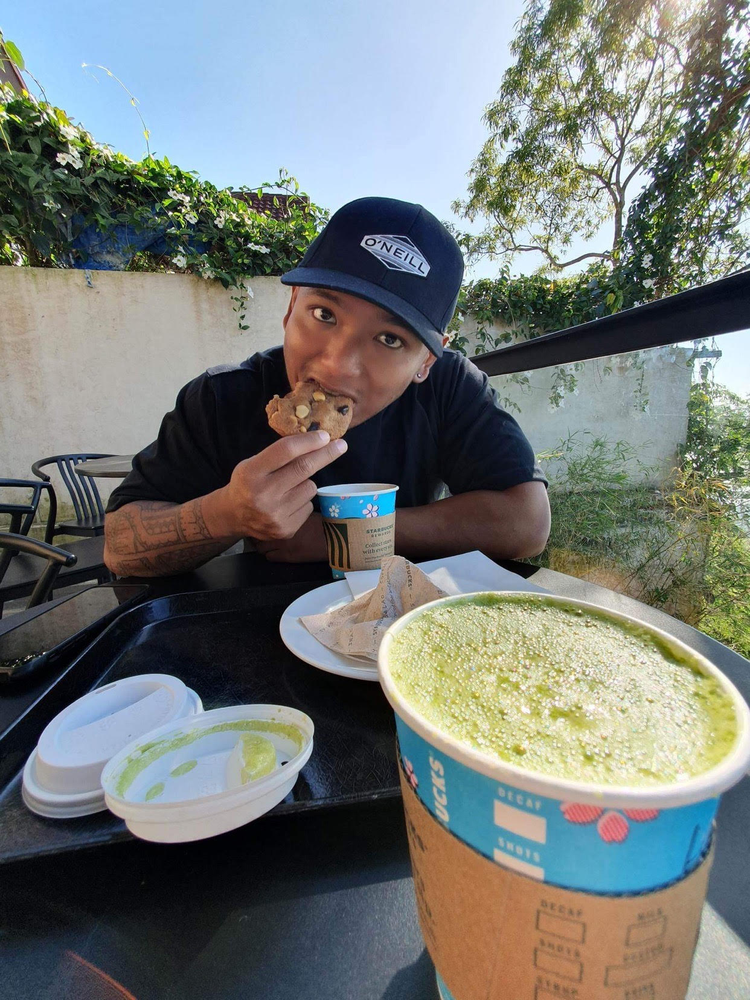

Adriel Justin V. Gonzales Resume

Summary
I'm looking to find a career in Web Development to further my education and apply the skills learned through several courses/bootcamps received online.
Education
- College Undergraduate Degree - Far Eastern University 2015-2019
- Business Management specializing in Marketing
- High School Degree - John F. Kennedy High School 2007-2011
Work Experience
- BLACK Construction - Cost Engineer 2022-Present
- Reporting of actual cost of project expenses with reference of the budget cost
- Handling of Payroll of all workers; Staff, Local and H2 workers with their respective activities for that day
- Using Cost Accounts to describe the job done of each worker
- Handling daily reports of activity done with the condition of the day
- Beneficial Adjusting - Claims Processor 2020-2022
- Receiving and processing claims made from insured
- Investigate through claim being made and determining whether claim would be approved or not
- Create reports to head insurance company, recommending of our decision based off evidence through investigation
Skills
- Organizational Skills
- Leadership Skills
- Great Communication Skills
- Attention to Detail
Awards
TBA
Hobbies Contact Information